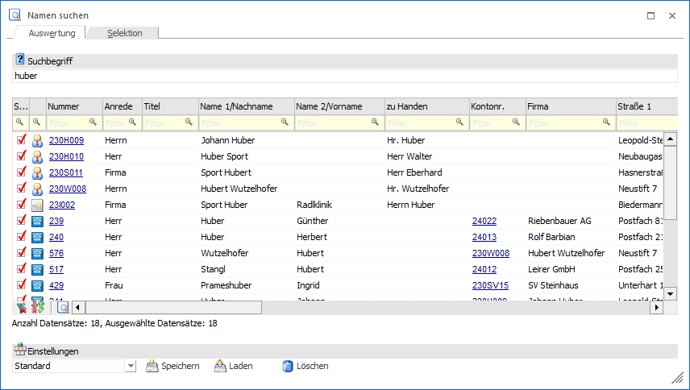
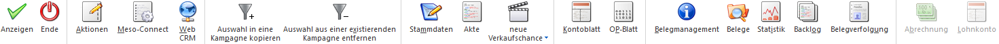

Oft passiert es, dass nur Bruchstücke von Informationen vorhanden sind, anhand dieser Informationen aber trotzdem Daten gefunden werden müssen. Da es aber die unterschiedlichsten Datenbereiche wie Personenkonten, Interessenten, Ansprechpartner, Kontaktadressen, Arbeitnehmer und Vertreter gibt, gestaltet sich die Suche nach dem richtigen Datensatz unter Umständen recht schwierig. Damit nicht alle Stammdatenbereiche extra durchsucht werden müssen, gibt es im Menüpunkt
1 CRM
1 Namen suchen
einen Matchcode über alle genannten Datenbereiche. Ausgehend von dieser Suche können auch diverse Aktionen wie Serienbriefe, Mailings und dergleichen mehr durchgeführt werden.

Das Fenster untergliedert sich in 2 Register, welche in den nachfolgenden Kapiteln beschrieben werden:
ü Register "Auswertung"
Hier werden
die Daten angezeigt, die aufgrund eines bestimmten Suchbegriffs gefunden
wurden.
ü Register "Selektion"
In diesem Teil
kann eingestellt werden, in welchen Datenbereichen und in welchen Datenfeldern
gesucht werden soll.
Buttons

Ø Anzeigen
Mit Hilfe des Buttons "Anzeigen" bzw. der Taste F5 wird die Suche erneut ausgeführt und die Tabelle gefüllt.
Ø Ende
Durch Anwahl des Buttons "Ende" bzw. der Taste ESC wird das Fenster geschlossen.
Ø Aktionen
Durch Anwahl dieses Buttons können für die selektierten Einträge Aktionen ausgeführt werden. Die Art der Aktion wird dabei durch ein Kontextmenü ausgewählt. Folgende Aktionen stehen zur Verfügung:
ü E-Mail senden
Die selektierten
Datensätze werden als temporäre Kampagne an das Postausgangsbuch (Versandart
"Serien-Mail") zum Erstellen und Versenden der E-Mails übergeben.
ü Brief schreiben
Es wird das
Postausgangsbuch geöffnet, in dem für die selektierten Datensätze ein
Serienbrief ausgegeben werden kann.
ü Fax senden
Es wird das Postausgangsbuch
geöffnet, in dem für die selektierten Datensätze ein Serienfax ausgegeben werden
kann.
ü Ausgabe Drucker
Bei Auswahl dieser
Aktion wird eine "Merkliste" auf den Drucker ausgegeben, welche die wichtigsten
Daten aller selektierten Datensätze enthält.
ü Ausgabe Excel
Es wird in das
Unterregister "Datenblatt" des Fenster Kampagnen gewechselt, in welchem alle
selektierten Datensätze in Form einer Excel-Tabelle dargestellt werden. Mit
Hilfe der rechten Maustaste (Option "Exportiere Tabelle…") kann diese Anzeige
auch als XLS-Datei abgespeichert werden.
ü  Telefon 1 anrufen
Telefon 1 anrufen
Wird diese Aktion
gewählt und ist beim aktiven Datensatz auch eine Telefonnummer eingetragen, wird
- sofern die entsprechenden Voraussetzungen vorhanden sind - die Telefonnummer 1
gewählt.
ü Telefon 2 anrufen
Wird diese Aktion
gewählt und ist beim aktiven Datensatz auch eine Telefonnummer eingetragen, wird
- sofern die entsprechenden Voraussetzungen vorhanden sind - die Telefonnummer 2
gewählt.
ü  Mobiltelefon anrufen
Mobiltelefon anrufen
Wird diese Aktion
gewählt und ist beim aktiven Datensatz auch eine Telefonnummer eingetragen, wird
- sofern die entsprechenden Voraussetzungen vorhanden sind - die
Mobiltelefonnummer gewählt.
ü WWW-Adresse aufrufen
Wenn beim aktiven
Datensatz eine Internet-Adresse hinterlegt ist, wird der installierte Browser
geöffnet und automatisch die im Datensatz hinterlegte Adresse angesurft.
ü Stammdaten aufrufen
Der in der Tabelle
markierte Datensatz wird im entsprechendem Stammdatenfenster (abhängig davon,
welcher Datensatztyp gerade geöffnet ist) aufgerufen und kann dort bearbeitet
werden.
ü Etiketten drucken
Für alle Datensätze,
die in der Tabelle selektiert sind, werden Etiketten ausgedruckt, wobei die
Ausgabe zuerst am Bildschirm vorgenommen wird. Von dort aus können die Etiketten
durch Anklicken des Drucker-Buttons auf den Drucker ausgegeben werden. Für den
Ausdruck der Etiketten wird das Formular "P99W432E" verwendet.
ü Info aufrufen
Wenn es sich bei dem
aktiven Datensatz in der Tabelle um ein Personenkonto
(Debitor/Kreditor/Interessent) oder um einen Ansprechpartner eines
Personenkontos handelt, dann wird das Konto in der Konteninformation (WinLine
INFO) geöffnet.
Ø Meso-Connect
Durch Anklicken des Buttons "Meso-Connect" wird ein Kontextmenü geöffnet, in dem standardmäßig folgende "Meso-Connect"-Aktionen zur Verfügung stehen:
ü Mail
An die selektierten und sichtbaren
Datensätze kann mit dieser Aktion eine Mail geschickt werden. Es öffnet sich
dazu das Meso-Connect-Mail Fenster indem die Betreffzeile des Mails sowie ein
Text angegeben werden kann. Weiter besteht noch die Möglichkeit, ein Attachement
anzuhängen. Voraussetzung ist, dass bei den gewählten Datensätzen auch eine
E-Mail-Adresse vorhanden ist.
ü Kontakte
Mit dieser Aktion kann ein
Abgleich mit den Microsoft Outlook-Kontakten durchgeführt werden, wobei es 4
unterschiedliche Szenarien geben kann:
ü 1. Der Datensatz ist in Outlook noch nicht vorhanden. In diesem Fall wird der Kontakt neu angelegt.
ü 2. Der Datensatz ist in Outlook bereits vorhanden, in der WinLine wurde eine Änderung durchgeführt. In diesem Fall werden die veränderten Daten an Outlook übergeben.
ü 3. Der Datensatz ist in Outlook bereits vorhanden und wurde dort auch verändert. In diesem Fall werden die veränderten Daten in die WinLine übernommen.
ü 4. Der Datensatz ist in Outlook und in der WinLine bereits vorhanden und wurde auch in beiden bereits verändert. In diesem Fall erfolgt eine Frage, welche der Daten aktualisiert werden sollen.
ü Excel
Damit wird das Programm Microsoft
Excel gestartet und der bzw. die selektierten und sichtbaren Datensätze werden
mit den Spaltenüberschriften übergeben.
ü Word-Fax
Hier wird eine Word-Fax-Vorlage
aufgerufen, wobei entschieden werden kann, ob für jeden selektierten und
sichtbaren Datensatz ein eigenes Fax oder alle Datensätze auf einer Fax-Vorlage
eingefügt werden.
ü Word-Tabelle
Bei dieser Aktion wird
Microsoft Word gestartete und die selektierten und sichtbaren Datensätze werden
in einer Tabelle dargestellt.
ü StarCalc
Sofern das Programm StarCalc
installiert ist, können die Daten in dieses Programm übergeben werden.
ü StarWrite
Sofern das Programm StarWrite
installiert ist, können die Daten in dieses Programm übergeben werden.
ü Wizard
Über diesen Eintrag kann der
MESO-Connect Wizard aufgerufen werden, mit dem neue Aktionen erstellt bzw.
bestehende Aktionen verändert werden können.
Ø Web CRM
Über diesen Button kann eine spezielle (WEB)-Ansicht der Konteninformation aufgerufen werden. Voraussetzung hierfür ist, dass sich die WinLine WEBEdition im Einsatz befindet.
Ø Auswahl in eine Kampagne kopieren
Die selektierten Datensätze können mit Hilfe des Programms Kampagne/Merkliste verändern in eine neue bzw. bestehende Kampagne kopiert werden.
Ø Auswahl aus einer existierenden Kampagne entfernen
Die selektierten Datensätze können mit Hilfe des Programms Kampagne/Merkliste verändern aus einer bestehenden Kampagne entfernt werden.
Ø Stammdaten
Mit Hilfe des Buttons "Stammdaten" wird das Stammdaten-Programm des Datensatzes geöffnet und dieser geladen. Eine Ausnahme stellen hierbei Ansprechpartner dar. Bei diesen öffnet der Button die Stammdaten des zugeordneten Kontos.
Ø Akte
Durch Anklicken des Buttons Akte wird das Fenster "Akte" geöffnet, wo Detailinformationen zu diesem Datensatz in Bezug auf andere Datenbereiche eingesehen werden können (nähere Information hierzu entnehmen Sie bitte dem Kapitel "Akte").
Ø neue Verkaufschance / neues Projekt
Handelt es sich bei dem aktuellen Datensatz um ein "Personenkonto", einen Interessenten oder einen Ansprechpartner, so kann mit Hilfe dieses Auswahl-Buttons eine neue Verkaufschance bzw. ein neues Projekt angelegt werden. Die Kontonummer wird hierbei automatisch in die Verkaufschance bzw. in das Projekt übertragen.
Ø Kontoblatt
Mit diesem Button wird in die WinLine FIBU gewechselt und das Kontoblatt für das gewählte Personenkonto ausgegeben. Handelt es sich bei dem Datensatz um einen Ansprechpartner eines Personenkontos, so wird die zugeordnete Kontonummer übergeben.
Ø OP-Blatt
Durch Drücken dieses Buttons wird in die WinLine FIBU gewechselt und das OP-Blatt für das gewählte Personenkonto ausgegeben. Handelt es sich bei dem Datensatz um einen Ansprechpartner eines Personenkontos, so wird die zugeordnete Kontonummer übergeben.
Ø Belegmanagement
Beim Drücken dieses Buttons wird in die WinLine FAKT gewechselt und das Belegmanagement für den gewählten Datensatz geöffnet. Bei Adressen des Typs "Kontakte" bzw. "Arbeitnehmer / Mitarbeiter" steht die Funktion nicht zur Verfügung.
Ø Belege
Durch Anwahl des Buttons "Belege" wird in der WinLine FAKT das Programm "Belege" in dem Modus "Info" geöffnet. In diesem werden alle Belege des Datensatzes, eingeschränkt auf das aktuelle Jahr, angezeigt. Bei Adressen des Typs "Kontakte" bzw. "Arbeitnehmer / Mitarbeiter" steht die Funktion nicht zur Verfügung.
Ø Statistik
Wird dieser Button gedrückt, so wird in die WinLine FAKT gewechselt und die Verkaufsstatistik für das aktive Personenkonto ausgegeben. Handelt es sich bei dem Datensatz um einen Ansprechpartner eines Personenkontos, so wird die zugeordnete Kontonummer übergeben.
Ø Backlog
Beim Anklicken dieses Buttons wird in die WinLine FAKT gewechselt, das Backlog geöffnet und die Informationen für das aktive Personenkonto bzw. den gewählten Interessenten angezeigt. Handelt es sich bei dem Datensatz um einen Ansprechpartner eines Personenkontos bzw. Interessenten, so wird die zugeordnete Kontonummer übergeben.
Ø Belegverfolgung
Handelt es sich um ein Personenkonto bzw. um einen Ansprechpartner, so kann durch Drücken dieses Buttons das Fenster "Belegverfolgung" in der WinLine FAKT geöffnet werden.
Ø Abrechnung
Handelt es sich bei dem aktuellen Datensatz um einen Arbeitnehmer aus dem WinLine LOHN A, so kann durch Anklicken dieses Buttons die Abrechnung der aktuellen Periode des Arbeitnehmers aufgerufen werden.
Ø Lohnkonto
Durch Anklicken des Buttons wird im WinLine LOHN A das Jahreslohnkonto des Arbeitnehmers aufgerufen.